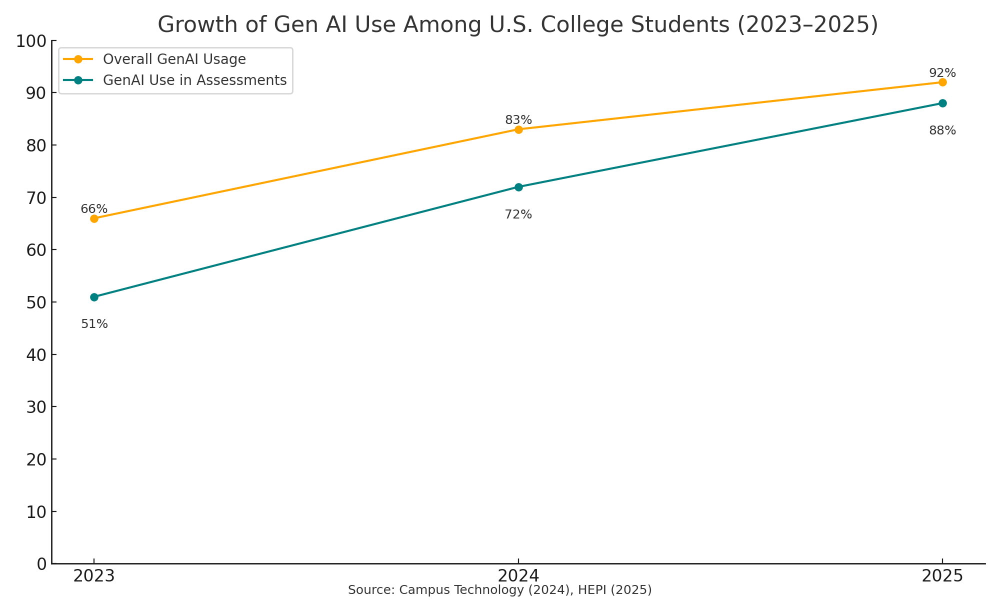
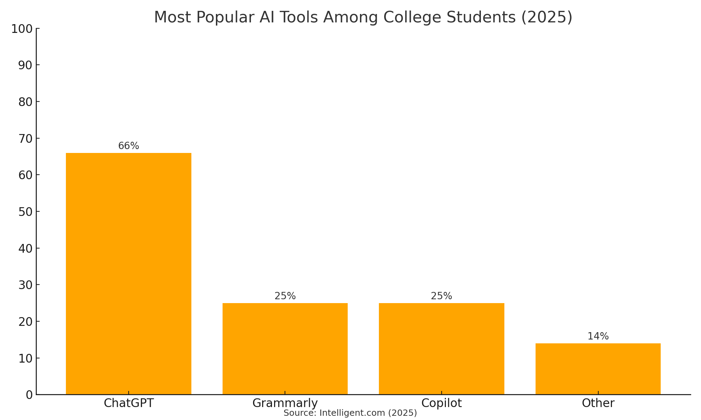
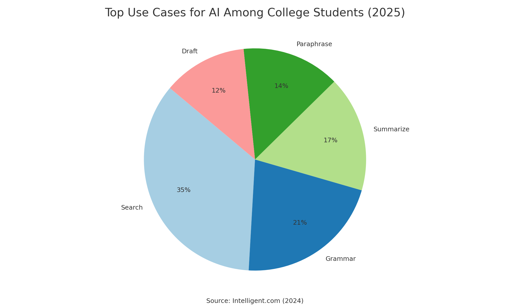
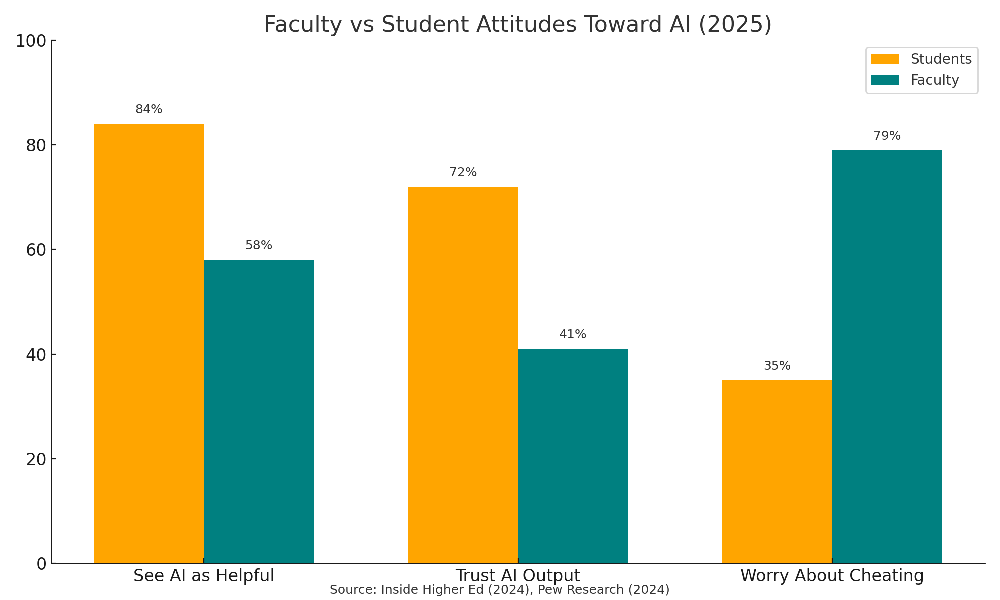
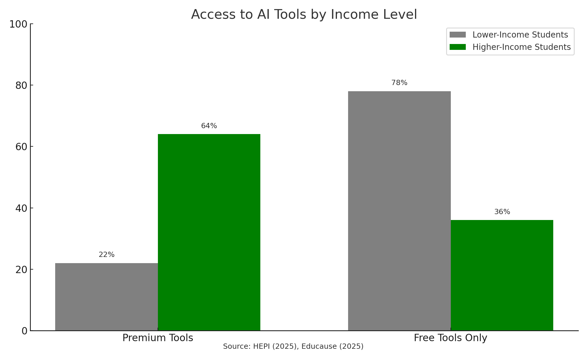

Meta description: Discover how U.S. college students are using AI in 2025—from ChatGPT to Grammarly. Data-driven insights into trends, tools, and academic impacts. SEO keywords: Writing AI, Paper AI, AI Assistant, College AI.
It depends on the institution’s policy. Some universities allow AI assistance if properly disclosed, while others prohibit it entirely. Always check with your instructor.
ChatGPT is widely used for brainstorming and drafting. Grammarly is excellent for grammar and clarity. Combining both often yields strong results.
By providing access to premium tools, training students on ethical usage, and standardizing institutional policies across departments.
Yes. Tools like GitHub Copilot and Wolfram Alpha are commonly used for coding, math, and data analysis tasks in STEM disciplines.
AI can support accessibility by simplifying complex texts, converting speech to text, or offering grammar support for neurodivergent learners.
Some institutions use detection tools, but accuracy is variable. Professors may also detect AI use based on writing style or inconsistent quality.
Most employers value digital fluency, including responsible AI usage, especially in knowledge and tech industries.
Yes. Overreliance may reduce critical thinking, memory retention, and deep learning, particularly if AI replaces rather than supplements effort.
Yes. If AI tools contribute content or analysis, it’s good practice to cite them transparently according to institutional guidelines.
Absolutely. Many universities now offer workshops on prompt engineering and responsible AI use for academic success.
In 2025, AI tools have become deeply embedded in the academic experience of U.S. college students. What began as curiosity in early 2023 has evolved into near-universal reliance on generative AI (GenAI) technologies. From writing assistance to research and study help, students are using AI not as a novelty, but as a daily necessity. This white paper presents a data-driven analysis of how college students use AI in 2025—what tools they use, how frequently, and what it means for learning and integrity. Understanding these patterns is essential for educators, administrators, and policymakers seeking to create effective, equitable, and ethical academic environments.
Over the past three years, the use of AI tools in higher education has shifted from a niche behavior to a mainstream necessity. According to a 2024 survey by Campus Technology, 86% of college students report using AI tools, with 24% using them daily and another 54% weekly. In a separate survey conducted by the Higher Education Policy Institute (HEPI), 92% of undergraduate students reported using generative AI tools like ChatGPT for schoolwork, with 88% specifically using them for assignments and assessments. These numbers represent a sharp increase from 2023, when only 66% of students reported using such tools.

This surge in adoption has multiple drivers. The accessibility and intuitive design of tools like ChatGPT, Grammarly, and Copilot make them easy to integrate into study routines. Additionally, the rising academic pressures and time constraints many students face encourage them to seek assistance that can streamline their work, clarify difficult concepts, or generate drafts in minutes. AI has become a practical solution to academic stress, allowing students to meet deadlines and expectations more efficiently.
Among the suite of available tools, OpenAI's ChatGPT remains the most widely used, with 66% of students citing it as their preferred AI assistant, according to a 2025 survey by Intelligent.com. Grammarly and Microsoft Copilot follow closely, each used by approximately 25% of students. Other tools such as Notion AI, Jasper, and Perplexity AI are also gaining traction, particularly among students in writing-intensive majors or STEM fields.

These tools serve different purposes. Grammarly is favored for proofreading and clarity, Copilot is integrated into Microsoft Word and Excel for enhanced productivity, and ChatGPT stands out for its versatility in handling complex queries, generating written content, and simulating conversations. Students often use multiple tools depending on their task—drafting content with ChatGPT, checking grammar with Grammarly, and organizing study notes using Notion AI.
AI tools are being used across a wide spectrum of academic activities. A recent student survey revealed the top use cases include information search (69%), grammar checking (42%), summarization (33%), paraphrasing (28%), and draft generation (24%), based on a 2024 survey conducted by Intelligent.com. These tasks span both cognitive and mechanical dimensions of academic work. For instance, students may use AI to translate complex research into understandable summaries or to brainstorm ideas and structure essays more clearly.

AI tools are also increasingly used for coding assignments, language learning, creating visual presentations, and even preparing for exams by generating mock questions. Some students have created their own personalized AI workflows, where tools are layered and used in sequence for maximum efficiency. This hybrid model of human-AI collaboration is enabling students to produce higher-quality work with less effort and in less time.
The impact of AI on academic performance is nuanced. On one hand, students report feeling more confident turning in assignments that have been reviewed or enhanced by AI. This boosts grades and reduces anxiety. On the other hand, emerging research shows that excessive reliance on AI can hamper long-term retention and critical thinking. A 2025 MIT study found that students who used AI to complete reading assignments showed significantly less comprehension when tested without assistance.
Furthermore, while AI enables efficiency, it does not automatically teach students how to think analytically or evaluate sources. Many professors worry that the ease of generating plausible-sounding content may discourage students from engaging deeply with material. As such, the educational community is beginning to differentiate between AI as a productivity tool and AI as a learning partner. Best practices are still being developed to ensure that AI supports, rather than supplants, cognitive growth.
Despite frequent use of AI tools, students do not always feel prepared for the AI-powered job market. According to a Campus Technology report, 58% of students say they lack adequate AI skills, and 48% do not feel ready for a workplace where AI will be integrated into daily tasks. This paradox—high usage but low fluency—reflects a gap in the current educational infrastructure.
To address this, some institutions are beginning to offer AI literacy courses and workshops that cover topics like prompt engineering, AI ethics, and data privacy. These initiatives, however, are not yet widespread. Many students continue to use AI in an ad-hoc and superficial manner, without fully understanding how the technology works or what its limitations are. Bridging this gap will be essential for preparing graduates who are not only consumers of AI but also competent collaborators with it.
Policies governing AI use vary significantly between colleges. Only 28% of institutions currently have formal AI policies in place, while 32% are in the process of developing them, according to Inside Higher Ed's 2024 College AI Policy Report. This lack of standardization creates confusion among students. A 2024 Inside Higher Ed report found that 30% of students are uncertain whether their use of AI constitutes a violation of academic integrity policies.
Moreover, enforcement is inconsistent. Some instructors allow AI use as long as it is disclosed, while others prohibit it entirely. This inconsistency leaves students navigating a fragmented landscape where the rules change from one class to the next. It also raises important questions about fairness and transparency—students at institutions with clear guidelines may have an advantage over those in murkier policy environments.
Faculty members are divided in their views on AI. While some embrace the technology as an opportunity to rethink pedagogy, others see it as a threat to academic integrity and student independence. In response to the rise of AI-assisted cheating, 71% of instructors have begun monitoring assignments more closely, and 61% have redesigned assessments to be more AI-resilient, based on a faculty poll published by Inside Higher Ed in 2024. This includes open-book exams, in-class essays, and oral presentations that emphasize process over product.
Some professors are also experimenting with AI-inclusive assignments that ask students to use AI tools but then reflect on the process—comparing AI-generated answers with their own or analyzing errors and biases in AI outputs. These activities not only make cheating more difficult but also teach students to think critically about the technology itself.

While AI has the potential to democratize education, it also poses risks for deepening existing inequities. Students at well-funded universities often have access to premium AI subscriptions, personalized tutoring platforms, and institutional guidance. Meanwhile, students from lower-income backgrounds may rely solely on free versions with limited functionality, as noted in the HEPI (2025) Equity in AI Access study.
Additionally, students with disabilities have reported using AI as an accessibility tool—for instance, converting text to speech, simplifying dense academic texts, or drafting responses more easily. However, accessibility features are often underpublicized or poorly integrated into mainstream tools. Closing these gaps will require deliberate efforts to ensure equitable access to high-quality AI resources across all student populations.

As AI continues to evolve, so too will its role in academia. In the next five years, we can expect deeper integration of AI into learning management systems, personalized feedback tools, and intelligent tutoring systems. AI will not just assist students—it will also support faculty by automating grading, generating syllabi, and monitoring student progress.
However, the cultural shift will be equally significant. The very definition of learning, authorship, and effort is being reexamined. Colleges will need to develop new metrics for evaluating student success—ones that recognize collaboration with AI as a legitimate form of academic engagement rather than a shortcut or a threat. As AI becomes a staple of intellectual work, higher education must lead in shaping a culture that values both human creativity and machine augmentation.
As AI continues to reshape higher education, the most important challenge is not whether to embrace it—but how. Colleges and universities must act now to close the widening gap between student behavior and institutional readiness. This requires courageous leadership, investment in faculty training, student engagement, and transparent policies that support innovation while upholding academic standards. AI is a tool—its impact will depend on how wisely, creatively, and responsibly it is used by those who teach and those who learn.
For institutions ready to lead, the time is now to:
The future of learning is not human versus machine—it is human with machine. In 2025, students have already made this leap. It's time the systems around them caught up.
I hereby declare that this white paper, "How U.S. College Students Use AI in 2025: A Quantitative Snapshot," is my original work. All information, statistics, and insights presented have been either:
No part of this document has been copied or reproduced from any external source without appropriate attribution. All figures, visuals, and data representations were created uniquely for this report.
I understand the importance of academic integrity and confirm that this work complies with all institutional plagiarism and originality policies.